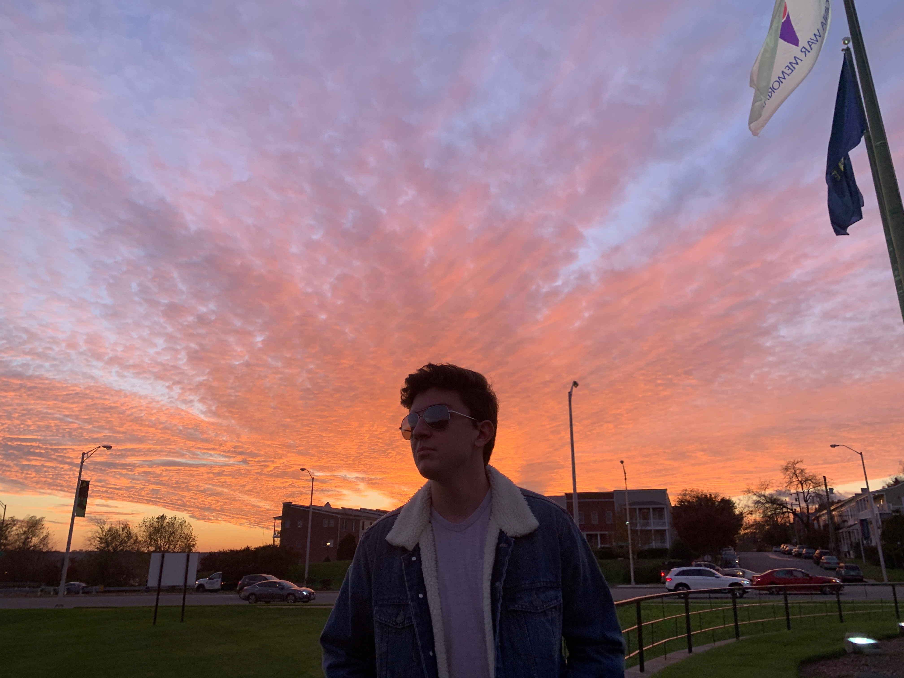

Josh Haug
Contact
haugjd@dukes.jmu.edu
2467 Bayberry Lane
Harrisonburg, VA 22807

Skills
- Adobe Photoshop
- Adobe Illustrator
- Adobe InDesign
- Microsoft Word
- Microsoft Powerpoint
- Wordpress
- Canva
Education
Bachelor's Degree
High School Diploma
- Chantilly High School
- Graduated June 2020
Experience
Ad Campaign Organizer
February 2022
Ole School Alumni Group - Harrisonburg, VA
James Madison University SMAD
- Developed a multimedia advertisement campaign for a scholarship group here at JMU that focuses on increasing the enrollment of minority students
- Utilized print, social, and digital media to promote the Ole School Alumni Group
- Worked alongside other students to create advertisements as well as deliverables
Volunteer Coordinator
February 2020-February2021
Cornerstones - Fairfax, VA
- Created schedules for myself and other members of the community to collect and donate food items to people in need during the height of the pandemic
- Recruited and trained new members of volunteer program goals and objectives
- Coordinated the accumulation of donation items and distributed them to those in need as well as to other volunteers for their donation purposes